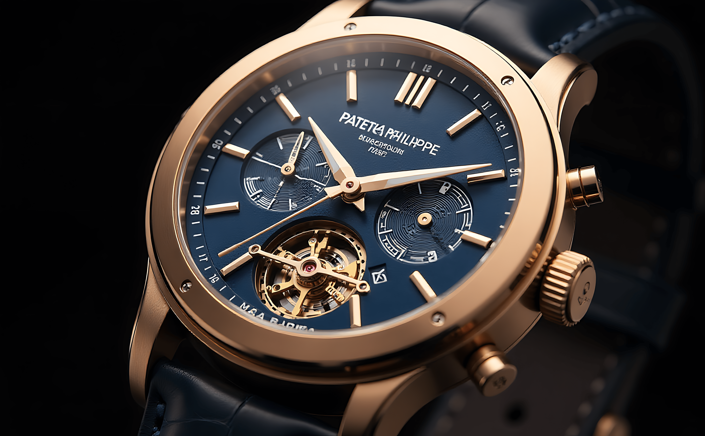

Você Sabia? Curiosidades do Tempo
O Tempo é um dos maiores mistérios da humanidade
Desde os primórdios da civilização, o ser humano busca entender, medir e dominar o tempo. Foram os egípcios que dividiram o dia em 24 horas, os babilônios que criaram os 60 minutos e os 60 segundos, e os gregos que desenvolveram os primeiros calendários precisos. Hoje, relógios atômicos guiam satélites, GPS e toda a tecnologia moderna com uma precisão de bilionésimos de segundo.
Nesta seção você vai encontrar curiosidades fascinantes sobre o tempo: como ele é medido, por que os meses têm tamanhos diferentes, o que são fusos horários, como funciona o horário de verão e muito mais. Tudo explicado de forma simples, divertida e educativa!
Explore as Curiosidades
Selecione um tema e mergulhe na história e na ciência por trás do tempo
Por que o dia tem 24 horas?
Descubra a origem egípcia da divisão do dia em 24 partes.
Qual o país com mais fusos horários?
Spoiler: não é a Rússia! Saiba qual nação domina os fusos horários.

Quem inventou o relógio de pulso?
Conheça a surpreendente história e a brasileira por trás desta invenção.

Como funcionam os relógios atômicos?
Entenda a incrível precisão dos relógios que guiam a tecnologia moderna.

O que é o horário de verão?
Saiba como funciona a prática de adiantar os relógios e por que é utilizada.
Por que fevereiro tem menos dias?
Descubra a razão histórica por trás do mês mais curto do ano.
Tipos de Relógio
Do mecânico centenário ao smartwatch conectado — conheça cada tipo em detalhes

Smartwatch
O relógio conectado que virou assistente de saúde no seu pulso.
Saiba mais
Mecânico
Engrenagens, molas e séculos de precisão sem usar nenhuma bateria.
Saiba mais
Quartzo
O cristal que vibra 32.768 vezes por segundo e revolucionou a relojoaria.
Saiba mais
Digital
Visor numérico, robustez e aquele clássico charme retrô dos anos 80.
Saiba mais